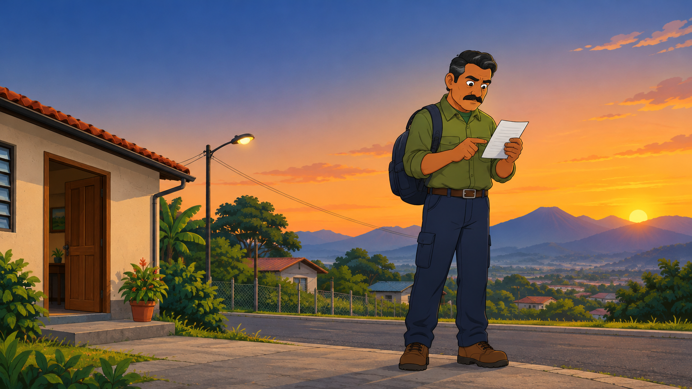

1
0:00 – 0:15
La nota de la escuela

Reunión informativa
- Imagen y acción
- Amanecer. Don Jorge sale a trabajar muy temprano. En la mano, una nota de la escuela que lee despacio, siguiendo las palabras con el dedo.
- Voz en off
- Gaby: Don Jorge, padre de Nayeli, de diez años, trabaja desde muy temprano.
Gaby: Hoy la escuela lo convoca a una reunión informativa. - Texto en pantalla
- Reunión informativa